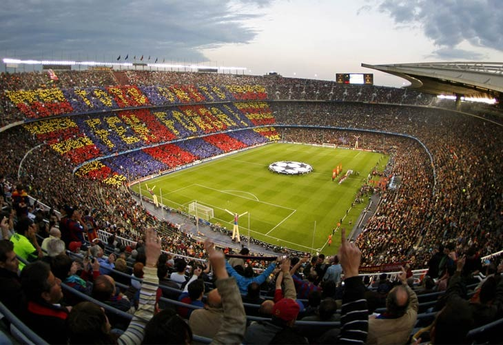

Početna
Istorija
Stadion
Igrači
Ocenite Sajt
Stadion
Osnovni podaci
Kamp nou
je fudbalski stadion u Kataloniji, Španija i smešten je u Barseloni. Domaćin stadiona je španski i evropski poznati fudbalski klub FK Barselona. Najpopularniji evropski stadion, može da primi 99.354 gledaoca. Kamp Nou je najveći stadion u Evropi. Stadion je otvoren 24. septembra 1957. utakmicom u kojoj su igrali, domaćin FK Barselona i jedan ol-star tim iz Varšave. Sponzori stadiona su bili isto navijači FK Barselone. 1982. renoviran je Kamp nou za 120.000 gledalaca za svetsko prvenstvo, ali je zbog pitanja bezbednosti UEFA smanjila kapacitet stadiona na 99.354 gledaoca. Kamp nou je jedan od 29 stadiona u Evropi koji ima dozvolu sa 5 zvezdica.
